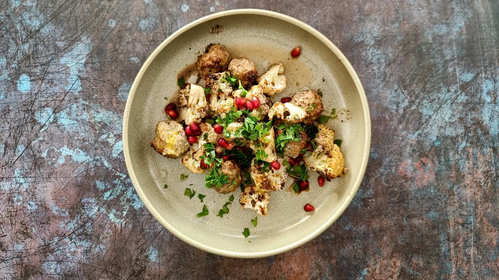
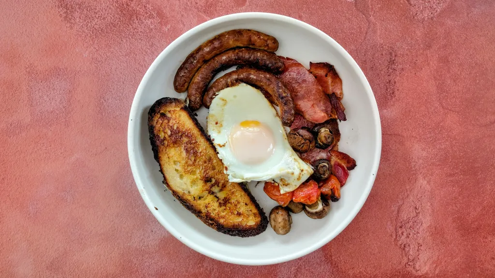
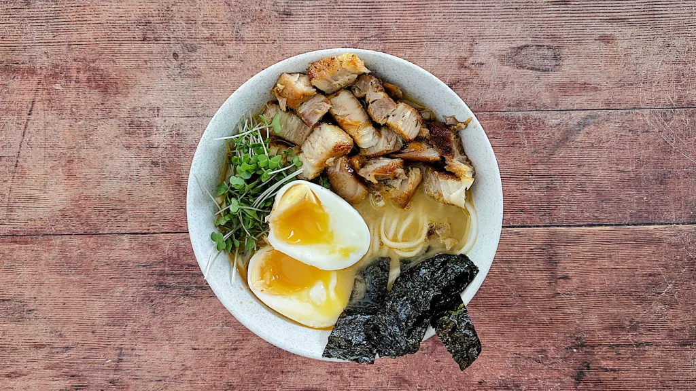
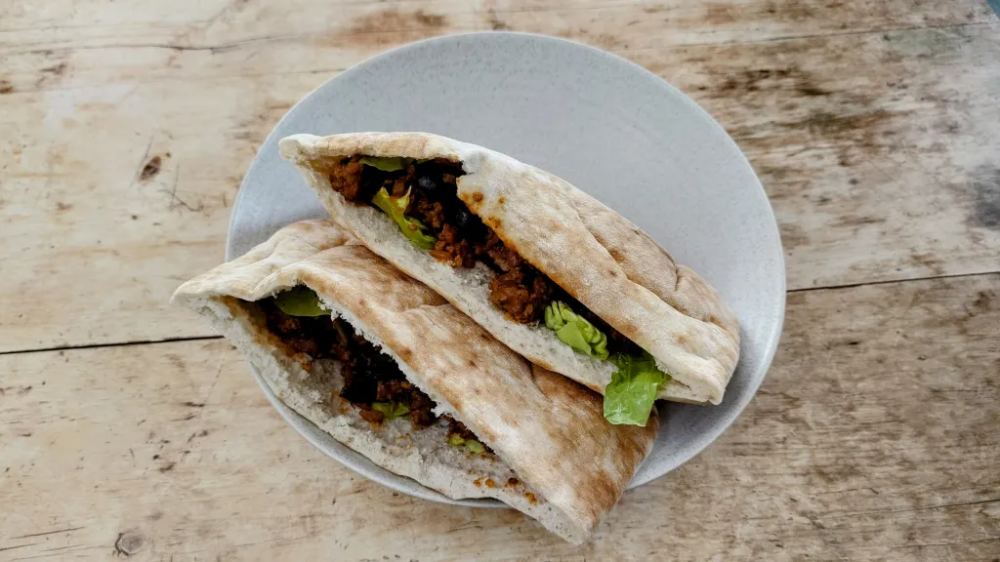
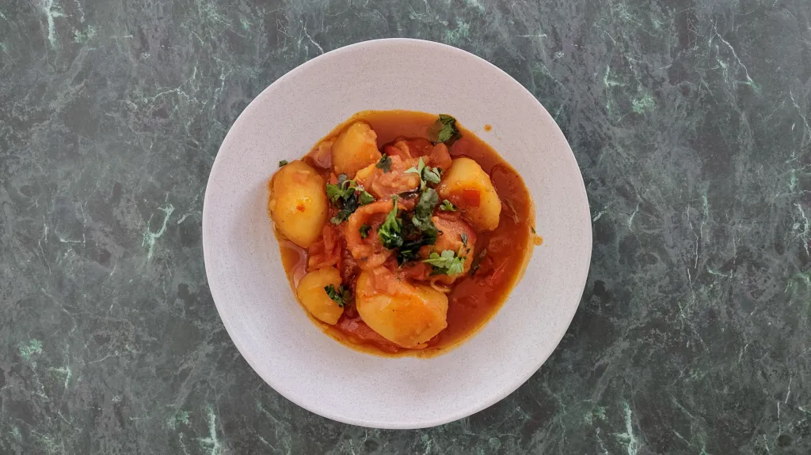

Most recent recipes
Black sea orzo and toasted vermicelli pilaf with haddock
50 mins
Serves 4
Bean stew with cheese flatbreads and pickled onions
1 hr 5 mins
Serves 4
Kale, fennel and noodle soup
1 hr 20 mins
Serves 4

Italian-style tuna sandwich
15 mins
Serves 4

Pulled pork chilli
6 hr 20 mins
Serves 6
Tfaya with moroccan fry
1 hr 5 mins
Serves 4
Potato-topped spiced chickpeas
1 hr 30 mins
Serves 4
Ginger-beer pork
25 mins
Serves 4
Carrot pepper pasta
20 mins
Serves 4
Spiced lamb meatballs with sumac roasted cauliflower & pomegranate
35 mins
Serves 4

Classic full english breakfast
34 mins
Serves 2

Shirodashi ramen
2 hr
Serves 2

Fez kefta sandwich
25 mins
Serves 2

Potato tagine
1 hr 5 mins
Serves 4
